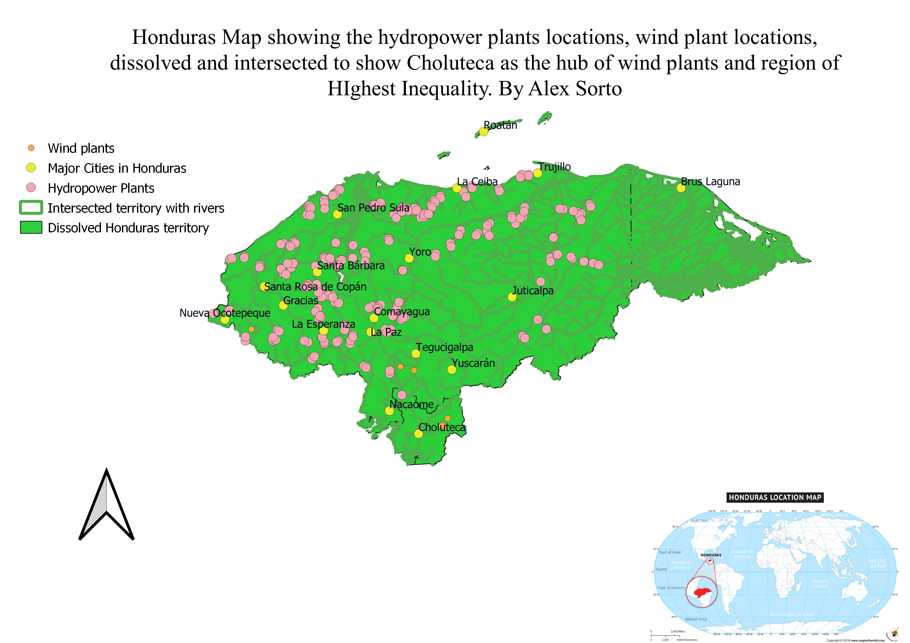
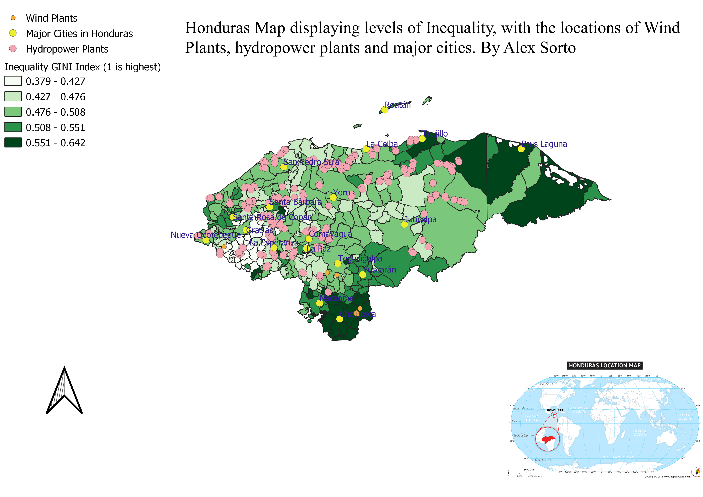
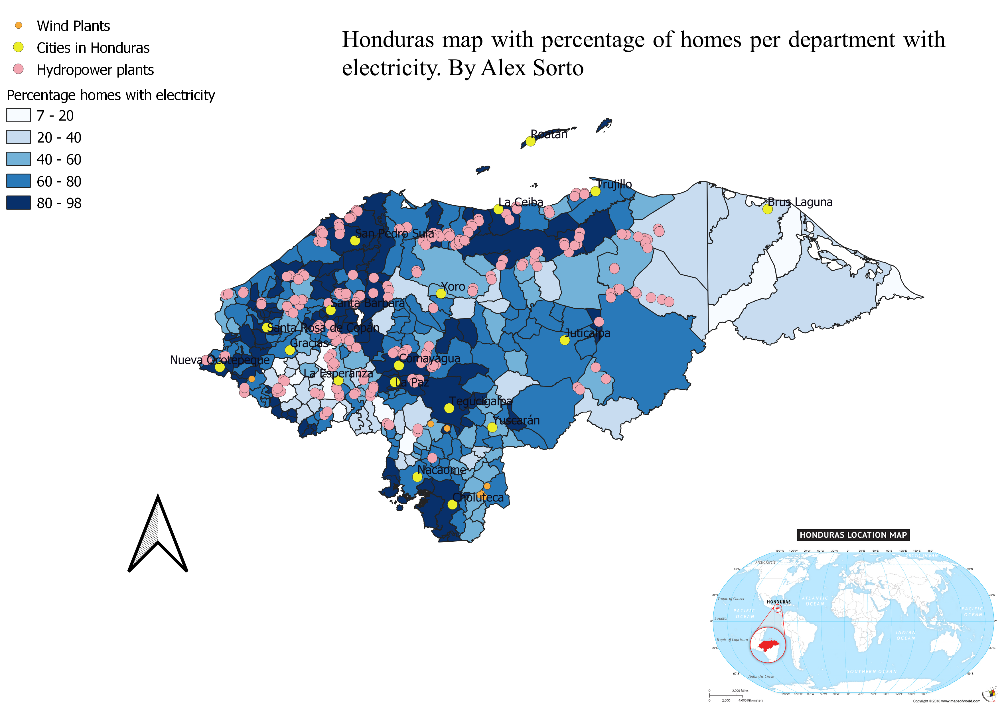

Homework 10:
In this homework I displayed different maps of Honduras using Geoprocessing tools such as dissolved, buffering, and intersection. The questions I answered in my analysis were:
Is there a higher percentage of electricity in homes where wind plants operate? What are the regions with most inequality and what is its relationships with access to electricity?
Alex Sorto



Data used for this project
CSV datasets from the Humanitarian Data Exchange
Link to Layers from the National Autonomous University GeoPortal
Link to Map Locator for Honduras